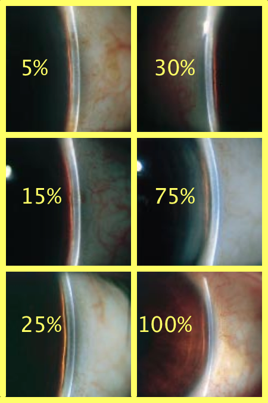

Description:
This element allows drawing and recording of gonioscopy findings. The angular extent of features such as angle recession, anterior synechiae, and angle new vessels is shown graphically, and extracted into text using the report button.
The Van Herick grade can be selected from the menu, or from the visual selector which uses diagrams from Paul Foster's paper as a guide.
Status: *** This element code is now frozen for the Glaucoma 2 release in July 2014 ***
Settings:
Level: |
Edit mode:
Right gonioscopy:
|
Van Herick: |
|
|
Foster images  |
Text description: |
Left gonioscopy:
Display mode:
Right eye:
Left eye:
Steering Group:
Glaucoma